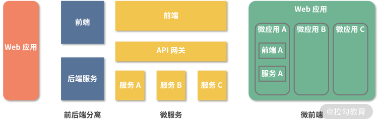

要点：
在这之前，我们来思考一个问题，在日常开发中是怎么复用代码的？
复制粘贴。这是初级工程师最容易采用的方式，该方式虽然简单有效，但会给代码维护带来很多问题，比如增加了很多重复的代码，复用代码逻辑发生变动时需要处处修改。因此，这种违反 DRY（Don’t Repeat Yourself）原则的方式应该尽量避免。
封装模块。稍有经验的工程师会考虑将代码逻辑封装成模块，然后通过引用模块的方式来复用，比如最常见的组件就是集成了视图操作的代码模块。这种方式解决了“复制粘贴”的可维护性问题，但如果将场景扩大，这种方式就行不通了，比如多个项目要使用同一个模块的时候。
打包成库。模块很好地解决了跨文件复用代码的问题，对于跨项目复用的情况可以通过打包成库的方式来解决，比如前端领域中会打包成库然后发布到 NPM 中，使用的时候再通过命令行工具来安装。
提供服务。库这种复用方式其实也有缺陷，首先库有特定的依赖，比如要在 React 项目使用基于 Vue 开发的树形组件，就必须把 Vue 也引进来，这样势必会增加项目体积和复杂度；其次库更多的是偏向功能的复用，而偏向业务的代码则很少用库来实现。如果使用微前端架构就可以按照业务拆分成微应用，然后再通过配置引用的方式来复用所需的微应用。
不过微前端最早被提出不是为了代码的复用，而是用来将项目进行拆分和解耦。
微前端概念
“微前端”一词最早于 2016 年底在 ThoughtWorks Technology Radar 中提出，它将后端的微服务概念扩展到了前端世界。微服务是服务端提出的一个有界上下文、松耦合的架构模式，具体是将应用的服务端拆分成更小的微服务，这些微服务都能独立运行，采用轻量级的通信方式（比如 HTTP ）。
微前端概念的提出可以借助下面的 Web 应用架构模式演变图来理解。

Web 应用架构模式的演变图
最原始的架构模式是单体 Web 应用，整个应用由一个团队来负责开发。
随着技术的发展，开发职责开始细分，一个项目的负责团队会分化成前端团队和后端团队，即出现了前后端分离的架构方式。
随着项目变得越来越复杂，先感受到压力的是后端，于是微服务的架构模式开始出现。
随着前端运行环境进一步提升，Web 应用的发展趋势越来越倾向于富应用，即在浏览器端集成更多的功能，前端层的代码量以及业务逻辑也开始快速增长，从而变得越来越难以维护。于是引入了微服务的架构思想，将网站或 Web 应用按照业务拆分成粒度更小的微应用，由独立的团队负责开发。
从图上可以看出，微前端、微服务这些架构模式的演变趋势就是不断地将逻辑进行拆分，从而降低项目复杂度，提升可维护性和可复用性。
微前端应用场景
从上面的演变过程可以看出，微前端架构比较适合大型的 Web 应用，常见的有以下 3 种形式。
- 公司内部的平台系统。这些系统之间存在一定的相关性，用户在使用过程中会涉及跨系统的操作，频繁地页面跳转或系统切换将导致操作效率低下。而且，在多个独立系统内部可能会开发一些重复度很高的功能，比如用户管理，这些重复的功能会导致开发成本和用户使用成本上升。
- 大型单页应用。这类应用的特点是系统体量较大，导致在日常调试开发的时候需要耗费较多时间，严重影响到开发体验和效率。而且随着业务上的功能升级，项目体积还会不断增大，如果项目要进行架构升级的话改造成本会很高。
- 对已有系统的兼容和扩展。比如一些项目使用的是老旧的技术，使用微前端之后，对于新功能的开发可以使用新的技术框架，这样避免了推翻重构，也避免了继续基于过时的技术进行开发。
微前端核心思想
微前端架构遵循下面 3 个核心思想。
1. 技术无关
前端看上去非常统一，不像服务端在语言上可选择性非常多（Java、Python、Go、PHP 等），但仍然在框架上存在分歧。微前端架构要求保留每个团队选择技术栈的权利，即不同微应用可以选择不同的技术框架来实现，当然也包括制定不同的发布周期和发布流程。
2. 环境独立
为了达到高度解耦的目的，每个微应用不应当共享运行时环境，即使所有微应用都使用了相同的框架，那么它们之间应该尽量避免依赖共享状态或全局变量。
为了避免微应用之间产生冲突，应该通过命名前缀等方式来对一些公共作用域进行隔离。
对于 CSS 隔离，比较容易产生冲突的是主应用与微应用，可以采用 CSS Module 或者命名空间的方式，在编写每个微应用时使用约定好的特定前缀，或者采用 postcss 插件，在打包时添加特定的前缀。
另一种隔离，不同于微应用之间的 CSS 方式是在每次新的微应用加载时，将前一个微应用的 link 和 style 进行卸载。
对于 JavaScript 隔离则会麻烦一些，比较好的做法是使用沙箱的方式来进行隔离。沙箱机制的核心是让局部的 JavaScript 运行时，对外部对象的访问和修改处在可控的范围内，即无论内部怎么运行，都不会影响外部的对象。可以通过 with 关键字和 window.Proxy 对象来实现浏览器端的沙箱。
需要注意的是，沙箱机制核心在于创建一个虚拟的运行环境，并不等同于创建独立的作用域。在独立作用域中会有污染全局变量的风险，比如在独立作用域修改了原生 API 将 Array.prototype.forEach = null，那么之后的所有代码创建的数组执行 forEach 时都会报错，而沙箱机制就能避免这种问题的产生。
这种沙箱机制不仅能保证微应用之间的独立性，还能保证主应用的稳定性，所以当某个微应用的 JavaScript 执行失败或尚未执行时，整个应用应该仍是可用的。
3. 原生优先
原生优先使用浏览器事件进行通信，而不要使用自封装的发布订阅系统。如果确实必须跨应用进行通信，尽量让通信内容和方式变得简单，这样能有效地减少微应用之间的公共依赖。
微前端架构模式
了解完微前端的基本原理之后再来看看具体是如何实现的。微前端架构按集成微应用的位置不同，主要可以分为 2 类：
- 在服务端集成微应用，比如通过 Nginx 代理转发；
- 在浏览器集成微应用，比如使用 Web Components 的自定义元素功能。
一些说法认为通过构建工具在编译的时候进行集成也属于微前端范畴，比如将微应用发布成独立的 npm 包，共同作为主应用的依赖项，构建生成一个供部署的 JS Bundle，但这种方式并不符合微前端的核心思想，也并不是主流的微前端实现方式，故不做深入讨论。
这一课时我们只讨论服务端集成和浏览器端集成的情况。
服务端集成
服务端集成常用的方式是通过反向代理，在服务端进行路由转发，即通过路径匹配将不同请求转发到对应的微应用。这种架构方式实现起来比较容易，改造的工作量也比较小，因为只是将不同的 Web 应用拼凑在一起，严格地说并不能算是一个完整的 Web 应用。当用户从一个微应用跳转到另一个微应用时，往往需要刷新页面重新加载资源。
这种代理转发的方式和直接跳转到对应的 Web 应用相比具有一个优势，那就是不同应用之间的通信问题变得简单了，因为在同一个域下，所以可以共享 localstorage、cookie 这些数据。譬如每个微应用都需要身份认证信息 token，那么只需要登录后将 token 信息写入 localstorage，后续所有的微应用就都可以使用了，不必再重新登录或者使用其他方式传递登录信息。
浏览器集成
浏览器集成也称运行时集成，常见的方式有以下 3 种。
- iframe。通过 iframe 的方式将不同的微应用集成到主应用中，实现成本低，但样式、兼容性方面存在一定问题，比如沙箱属性 sandbox 的某些值在 IE 下不支持。
- 前端路由。每个微应用暴露出渲染函数，主应用在启动时加载各个微应用的主模块，之后根据路由规则渲染相应的微应用。虽然实现方式比较灵活，但有一定的改造成本。
- Web Components。基于原生的自定义元素来加载不同微应用，借助 Shadow DOM 实现隔离，改造成本比较大。
这也是一种非常热门的集成方式，代表性的框架有 single-spa 以及基于它修改的乾坤。
总结
这一课时介绍了微前端技术相关概念，核心内容如下：
- 首先，微前端这种架构模式来源于微服务，目的在于对项目进行拆分和隔离，从而提高项目的可维护性和可复用性；
- 其次，微前端这种架构的核心思想有 3 点，技术无关、环境独立、原生优先，其中环境独立比较难以实现，需要借助一定的技术手段或代码规范；
- 最后，主流的微前端实现方式大致分为两类，在服务端集成或者在浏览器端集成，服务端集成一般通过代理转发方式实现；在浏览器端集成则实现方式较多，也有例如 single-spa 这类框架支持。
最后布置一道思考题：除了前后端分离及微服务，你还了解过哪些架构模式？
Tips: Please indicate the source and original author when reprinting or quoting this article.